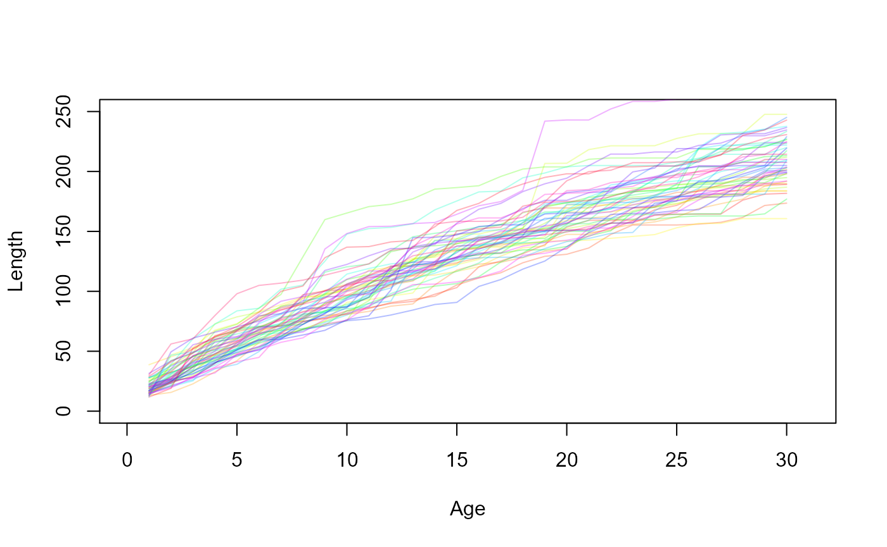
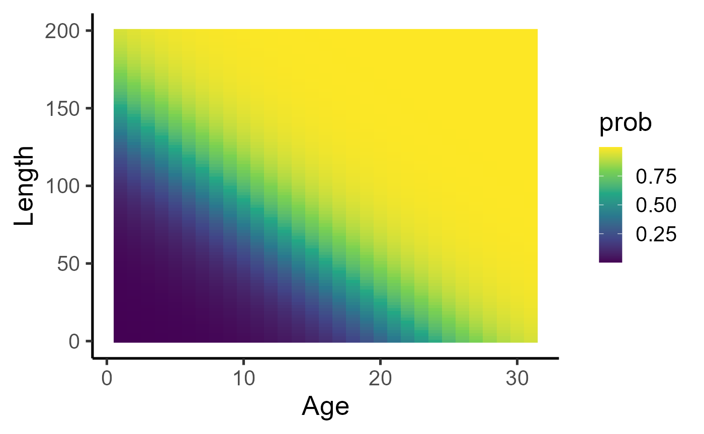
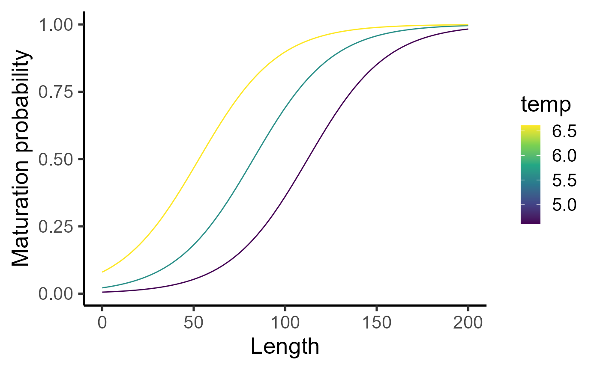
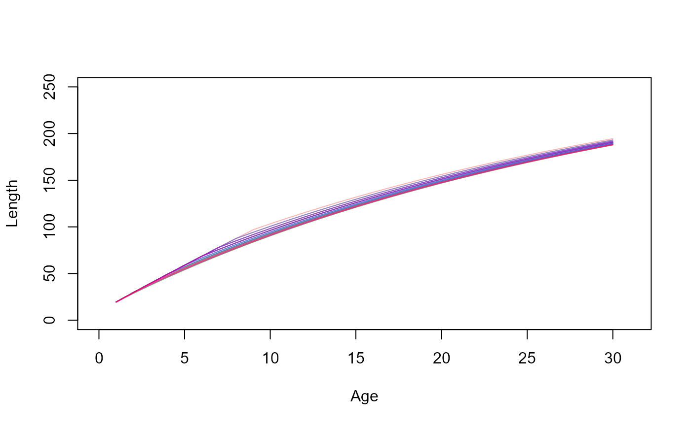
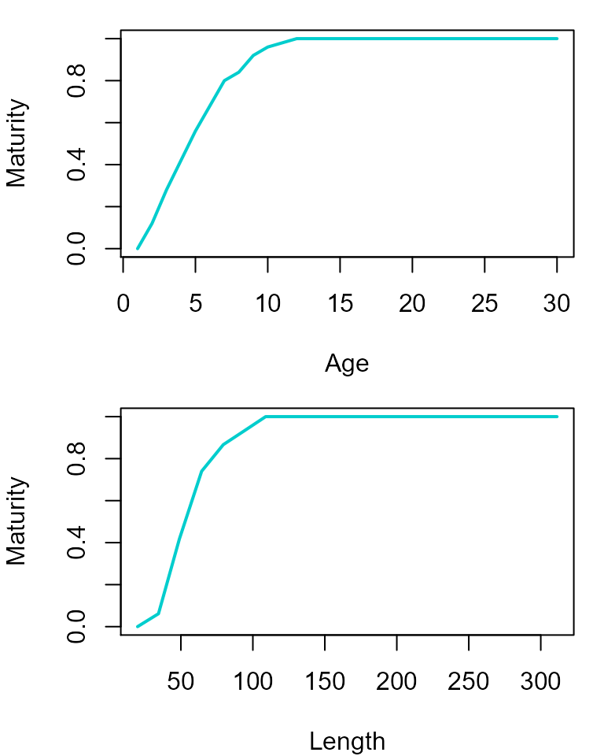
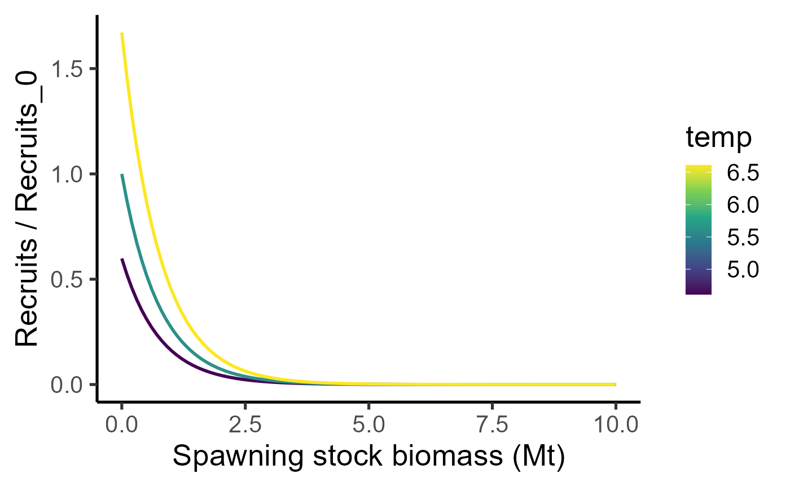
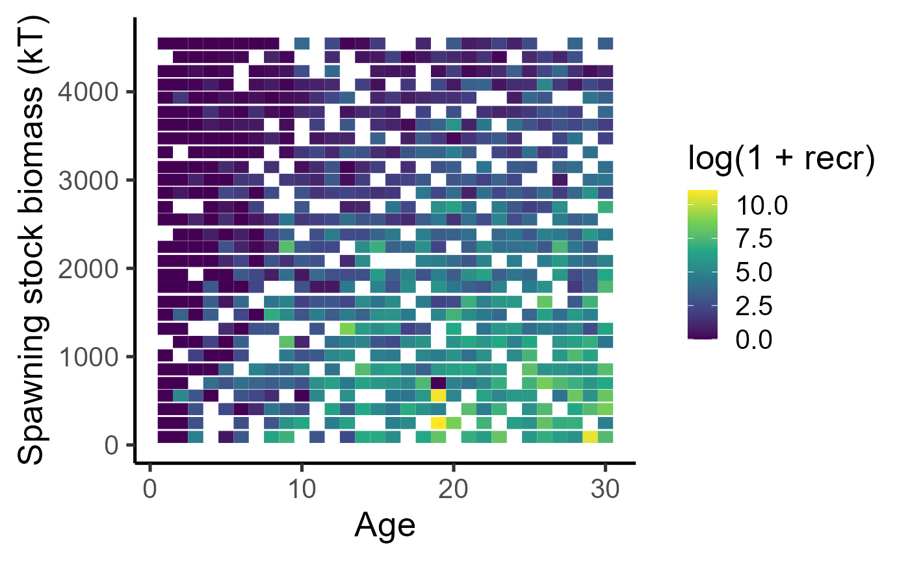
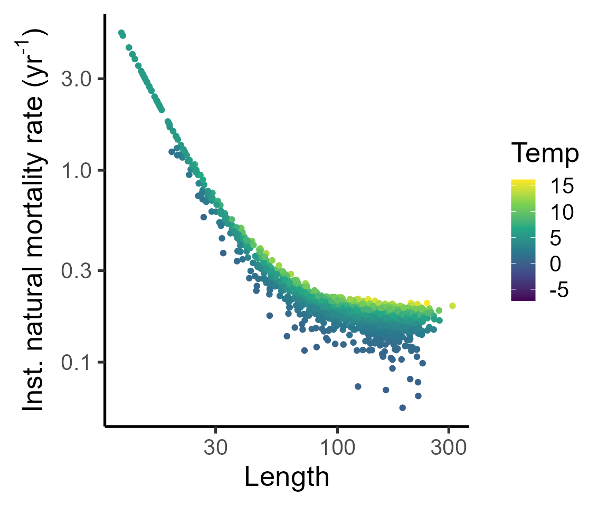
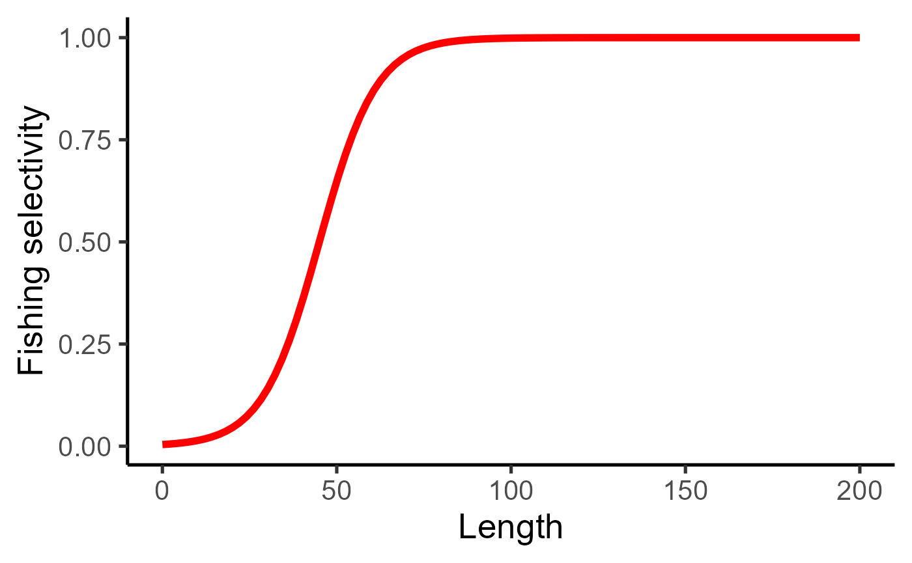
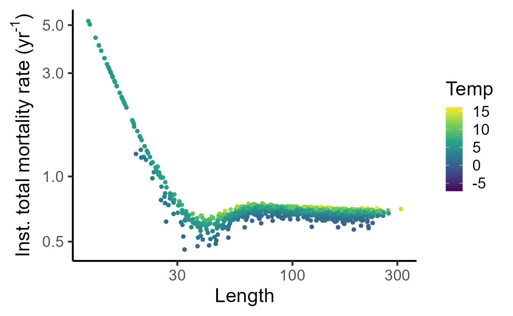

Fisheries model theory: biological model
Jaideep Joshi, Anna Shchiptsova
28 March 2022
theory_bio.RmdIntroduction
A fish goes through four life-history processes every year:
Growth - This is the increment in the body size by growth. Growth rates are different for mature and immature individuals, since mature individuals allocate resources for reproduction.
Decision to mature - Every year, fish will decide whether or not to mature (until maturation). Once matured, reproduction begins.
Reproduction - production of eggs
Mortality - This is natural and fishing-induced death
A fish is characterized by its age \(a \in \{1,a_{\max}\}\) and length \(l\), where \(a_{\max}\) is the maximum considered age. Below, we present our model formulations for these four life-history processes. For comparison, we also present corresponding formulations from a simpler age-structured model as in Dankel et al. XXXX.
Growth
Let us define a generalized length increment (\(\Delta l_p\)) from age \(a-1\) to age \(a\) as
\[ \Delta l_p = l_a^{\gamma_1 \gamma_2} - l_{a-1}^{\gamma_1 \gamma_2}, \]
where \(\gamma_{1}\) is the allometric exponent of relationship between energy-acquisition rate and body weight, and \(\gamma_{2}\) is the allometric exponent of length-weight relationship.
In our model, growth depends on the fish’s length, temperature, the total stock biomass of the population, such that the geneneralized length increment is given by
\[ \Delta l_p = \gamma_{1}\alpha_{1}\alpha_{2}^{- \gamma_{1}} e^{(\beta_1\Delta B +\beta_2 \Delta T)}, \] where \(\alpha_{1}\) is the mean weight-specific energy-acquisition rate, \(\alpha_{2}\) is the allometric coefficient of the length-weight relationship, and \(\Delta B = B - \bar B\) and \(\Delta T = T - \bar T\) are the anomalies of total stock biomass (TSB) and temperature, respectively. Setting \(\beta_1 = \beta_2 = 0\) removes the growth dependence on temperature and TSB.
In the absence of reproductive investment, i.e., for juvenile fish, the new length is therefore
\[ l'_{a} = \left(l_{a - 1}^{\gamma_{1}\gamma_{2}} + \Delta l_p\right)^{\frac{1}{{\gamma_{1}\gamma_{2}}}} \]
Mature fish (adults) invest energy into reproduction, such that the new length is downregulated. Thus, the length increment is
\[
l_{a} = \left\{
\begin{matrix}
l'_{a}, & \mathrm{\text{if juvenile}}, \\
\text{max}\left\{\frac{l'_{a}}{(1 +
\gamma_{1}g)^{\frac{1}{{\gamma_{1}\gamma_{2}}}}},\ l_{a-1}\right\}
& \mathrm{\text{if adult}} \\
\end{matrix}
\right.\
\]
where \(g\) is the gonadosomatic index
(GSI), i.e., the ratio of reproductive investment and somatic weight for
mature individuals.
Symbols are summarized in the table below:
| Parameter | Description |
|---|---|
| \(\gamma_{1}\) | allometric exponent of relationship between energy-acquisition rate and body weight |
| \(\gamma_{2}\) | allometric exponent of length-weight relationship |
| \(\alpha_{1}\) | mean weight-specific energy-acquisition rate |
| \(\alpha_{2}\) | allometric coefficient of length-weight relationship |
| \(g\) | gonadosomatic index (ratio of reproductive investment and somatic weight for mature individuals) |
We use the maximum of current and new length for adults to ensure that body size does not shrink.
The effective GSI of the fish during this growth year can be calculated from the difference between the potential length increment and the realized length increment,
\[ g_{a}^{'} = \frac{ \Delta l_p - (l_{a}^{\gamma_{1}\gamma_{2}} - l_{a - 1}^{\gamma_{1}\gamma_{2}})}{\gamma_{1}l_{a}^{\gamma_{1}\gamma_{2}}}. \]
Simulating growth
params_file = "../params/cod_params.ini"Let us now simulate the growth of a fish starting at age 1 upto age 30 under constant temperature and TSB. The fish will perform maturation, growth, and age increment, every year in that order. We will record the fish length at each timestep so that we can plot the growth trajectory.
fish = new(Fish, params_file)
fish$init(0, 5.61)
years = 1:31
length = numeric(31)
for (i in years){
length[i] = fish$length
fish$updateMaturity(5.61)
fish$grow(0, 5.61)
fish$set_age(fish$age+1)
}
plot(length~years, xlab="Age", ylab="Length", type="l", lwd=2)Now, since the growth trajectory of a fish depends on the age at which it matures, and since maturation is a random process, let us simulate lots of fish and look at the possible growth trajectories.
growth_trajectories = function(beta1=NULL, beta2=NULL, N=50){
names = c("t_birth", "age", "isMature", "isAlive", "length", "weight", "mort", "temp", "fec", "ssb")
dat_full = data.frame(data=matrix(nrow=0, ncol=length(names)))
colnames(dat_full) = names
plot(x=1, y=NA, xlim=c(0,31), ylim=c(0,250), xlab="Age", ylab = "Length")
for (f in 1:N){
fish = new(Fish, params_file)
if (!is.null(beta1)) fish$par$beta1 = beta1
if (!is.null(beta2)) fish$par$beta2 = beta2
dat = data.frame(data=matrix(nrow=0, ncol=length(names)))
colnames(dat) = names
temp0 = rnorm(1, mean=5.61, sd=3)
tsb0 = runif(1, min = 0, max = 1.93e3*3)
fish$init(tsb0, temp0)
dat[1,] = c(fish$get_state(), fish$naturalMortalityRate(5.61), 5.61, 0, 0.8*tsb0) # Assuming SSB is 80% of TSB, since we are not simulating a population
for (i in 2:30){
temp = rnorm(1, mean=5.61, sd=3)
tsb = runif(1, min = 0, max = 1.93e3*3)
fish$updateMaturity(temp)
fish$grow(tsb, temp)
fish$set_age(fish$age+1)
dat[i,] = c(fish$get_state(), fish$naturalMortalityRate(temp), temp, fish$produceRecruits(0.8*tsb*1e6, temp), 0.8*tsb) # Assuming SSB is 80% of TSB, since we are not simulating a population
}
points(dat$length~dat$age, type="l", col=scales::alpha(rainbow(N)[f], 0.3))
dat_full = rbind(dat_full, dat)
}
dat_full
}
dat_full = growth_trajectories(N=50)
Decision to mature
Decision to mature is defined by a probabilistic maturation reaction norm (PMRN), with a probability of maturing in the next year depending on age \(a\), length \(l\), and temperature \(T\), given by the following equation,
\[ m(a,l_a,T) = \frac{1}{1 + e^{-\left(\frac{l_{a} - (s_{m}a + i_{m})}{d_{m}} + \beta_3 \Delta T\right)}}, \]
with the steepness of the curve \(d_m\) calculated as
\[ d_{m} = \frac{\Delta l_{50}}{\ln{\left( \frac{1 - p}{p} \right) - \ln\left( \frac{p}{1 - p} \right)}}. \]
Let us visualize the PMRN.
lvec = seq(0,200, length.out = 100)
avec = seq(1,31, length.out = 31)
fish = new(Fish, params_file)
fish$init(0, 5.61)
calc_maturation_prob1 = function(a,l, temp=5.61){
fish$set_age(a)
fish$set_length(l)
p = fish$maturationProb(temp)
p
}
list(lvec = seq(0,200, length.out = 100), avec = seq(1,31, length.out = 31)) %>% cross_df() %>% mutate(prob = purrr::map2_dbl(avec, lvec, ~calc_maturation_prob1(.x, .y))) %>%
ggplot() +
geom_raster(aes(x=avec, y=lvec, fill=prob)) + scale_fill_viridis_c() + labs(x="Age", y="Length") + theme_classic(base_size=20)
list(lvec = seq(0,200, length.out = 100), temp = c(4.61,5.61,6.61)) %>% cross_df() %>% mutate(prob = purrr::map2_dbl(lvec, temp, ~calc_maturation_prob1(a=10, l=.x, temp = .y))) %>%
ggplot() +
geom_line(aes(x=lvec, y=prob, group=temp, col=temp)) + scale_colour_viridis_c() + labs(x="Length", y="Maturation probability") + theme_classic(base_size=20)
This PMRN influences the growth trajectories by determining the age at maturation, like so,
dat_full_00 = growth_trajectories(0,0)
and leads to the following maturity ogives.
par(mfrow = c(2,1), mar=c(4,4,1,1))
dat_full %>% group_by(age) %>% summarize(maturity = mean(isMature)) %>% with(plot(maturity~age, ylab="Maturity", xlab="Age", type="l", col="cyan3", lwd=2))
dat_full %>% mutate(length_class = cut(length, breaks=20)) %>% group_by(length_class) %>% summarize(maturity = mean(isMature), length=mean(length)) %>% with(plot(maturity~length, ylab="Maturity", xlab="Length", type="l", col="cyan3", lwd=2))
Parameters for maturation process are listed in the following table:
| Parameter | Description |
|---|---|
| \(\Delta l_{p}\) | PMRN width (length range of maturation envelope) |
| \(p\) | probability at lower bound of maturation envelope |
| \(s_{m}\) | PMRN slope |
| \(i_{m}\) | PMRN intercept |
Reproduction and recruitment
Cumulative reproductive investment translates into production of eggs. The fecundity rate (number of eggs produced per year) is given by the following equation:
\[ f(a,l_a) = \delta g_{a}^{'} \cdot w(l_a) \]
where \(w(l_a)\) is the weight of the fish of length \(l_a\),
\[ w(l_a) = \alpha_{2}l_{a}^{\gamma_{2}}, \]
and \(\delta\) is the mass-specific oocyte density of the mature pre-spawning ovary.
Eggs survive the first year with a probability \(s_0\) to become recruits. Number of recruits additionally also follows a temperature dependence with parameter \(\beta_4\) and a Ricker density dependence with parameter \(B_{1/2}\),
\[ n_\text{recruits} = n_\text{eggs}\cdot s_0 \cdot e^{\beta_4 \Delta T} \cdot 2^{-S/B_{1/2}}, \]
where \(S\) is the spawning stock biomass of the population
\[ S = \sum_{\text{a >= 3}} w_a I_\text{mature}, \]
| Parameter | Description |
|---|---|
| \(s_0\) | Maximum survival probability of offspring, |
| \(B_{1/2}\) | SSB at which survival probability drops to half |
list(x = seq(0,10, length.out=100), temp = c(4.61, 5.61, 6.61)) %>% cross_df() %>% mutate(y = exp(0.5135*(temp-5.61)) * 2^(-x/0.530)) %>%
ggplot(aes(y=y,x=x, col=temp, group=temp)) + geom_line(size=1) + labs(x="Spawning stock biomass (Mt)", y = "Recruits / Recruits_0") + theme_classic(base_size = 20) + scale_colour_viridis_c()
Here is the number of recruits per fish as a function of spawning stock biomass obtained from the growth trajectories above.
dat_full %>% ggplot(aes(x=ssb, y=fec)) + geom_point(aes(col=temp)) + scale_colour_viridis_c() + labs(x="Spawning stock biomass (kT)", y = "Recruits per capita") + theme_classic(base_size=20) + scale_y_log10(limits = c(1e-4, NA)) ## Warning: Transformation introduced infinite values in continuous y-axis## Warning: Removed 39 rows containing missing values (geom_point).
dat_full %>% mutate(ssb_class = ave(ssb, cut(ssb, breaks = 30))) %>% group_by(age, ssb_class) %>% summarize(recr = mean(fec)) %>%
ggplot() + geom_tile(aes(x=age, y=ssb_class, fill=log(1+recr))) + scale_fill_viridis_c() + labs(y="Spawning stock biomass (kT)", x = "Age") + theme_classic(base_size=20)## `summarise()` has grouped output by 'age'. You can override using the `.groups`
## argument.
Mortality
The juvenile and adult instantaneous natural mortality rate depends on length \(l_a\) and temperature \(T\), and is given by the following equation:
\[ M(a,l_a) = \left( \mu_0 + \alpha_{3}\left( \frac{l_{a}}{l_{\text{ref}}} \right)^{\gamma_{3}} \right)\left(\frac{T}{T_\text{ref}}\right)^{c_T}, \]
where symbols have the following meanings
| Parameter | Description |
|---|---|
| \(\mu_0\) | Length independent intrinsic mortality rate |
| \(\gamma_{3}\) | allometric exponent of relationship between instantaneous natural mortality rate and body length |
| \(\alpha_{3}\) | instantaneous natural mortality rate at reference length |
| \(l_{\text{ref}}\) | reference length for natural mortality |
| \(T_{\text{ref}}\) | reference temperature for natural mortality |
| \(c_T\) | exponent of the temperature dependence of mortality |
dat_full %>% ggplot(aes(y=mort, x=length, col=temp))+geom_point(alpha=0.5)+geom_jitter()+labs(x="Length", y=expression("Inst. natural mortality rate (yr"^"-1"*")"), col="Temp")+theme_classic(base_size = 20)+scale_color_viridis_c()+scale_y_log10()+scale_x_log10()## Warning: Removed 49 rows containing missing values (geom_point).
## Removed 49 rows containing missing values (geom_point).
Instantaneous fishing mortality rate depends on the harvest proportion \(h\) and fishing selectivity \(\sigma\), and acts on top of natural mortality. Thus, for a given harvest proportion \(h\) and minimum size limit \(L_{50}\), fishing mortality rate is given by
\[ F = -\log(1-h)\cdot \sigma(l_a), \]
where \(\sigma(l_a)\) is the fishing selectivity,
\[ \sigma(l_a) = \frac{1}{1+e^{-s(l_a-L_{50})}}, \]
where \(s\) is the Slope of the fishing selectivity curve.
tibble(length = seq(0,200,length.out=100)) %>% mutate(mort = 1/(1+exp(-0.1222*(length-45)))) %>% ggplot(aes(y=mort, x=length))+geom_line(col="red", size=2)+labs(x="Length", y="Fishing selectivity", col="Temp")+theme_classic(base_size = 20)
dat_full %>% mutate(sel = 1/(1+exp(-0.1222*(length-45)))) %>% ggplot(aes(y=mort-log(1-0.4)*sel, x=length, col=temp))+geom_point(alpha=0.5)+geom_jitter()+labs(x="Length", y=expression("Inst. total mortality rate (yr"^"-1"*")"), col="Temp")+theme_classic(base_size = 20)+scale_color_viridis_c()+scale_y_log10()+scale_x_log10()## Warning: Removed 49 rows containing missing values (geom_point).
## Removed 49 rows containing missing values (geom_point).